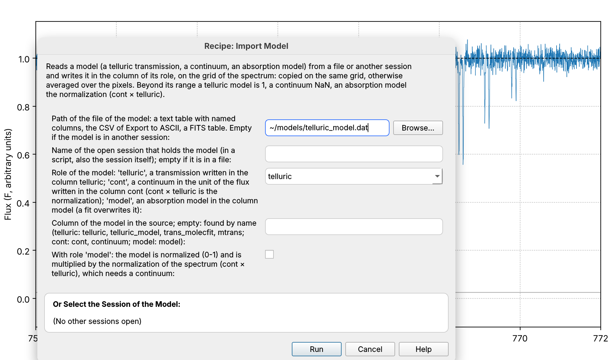

External Models#
A model made outside Astrocook can be brought into a spectrum: a telluric transmission, such as a Molecfit fit of the spectrum, a continuum, or an absorption model. A model is not a spectrum of its own: it becomes a column of the spectrum with a role, telluric, cont or model; the first two are used by the fits to normalize the flux (cont × telluric). The import is a recipe like the others: it can be undone, it is recorded in the session log and saved in the archive.
1. Importing a Model#
Open the spectrum, and select it in the session list.
Go to File > Import Model….
Choose the source of the model: a file (write its path, or Browse…), or another open session (click its name in the list below the fields; leave the file empty).
Choose the Role:
telluric, the transmission (1 where there is no telluric absorption),cont, a continuum (see The Continuum), ormodel, an absorption model (see The Absorption Model); for an absorption model normalized to 1, check the last box (the model is normalized).Leave the Column empty to let Astrocook find the column of the model by its name, or write its name.
Click Run.

The status bar and the log say how the model was brought onto the spectrum and how many pixels it covers, e.g. The telluric model of telluric_model.dat (column trans_molecfit) was copied (the model is on the grid of the spectrum) into the column telluric: it covers 26000 of 40000 pixels; beyond, 1. The model replaces a telluric column that the spectrum already has.
From a script, or from an agent through the MCP server, the same recipe:
session = session.file.import_model(file_path="telluric_model.dat") # a file
session = session.file.import_model(source_session=other, column="F") # another session
session = session.file.import_model(file_path="cont.dat", role="cont") # a continuum
session = session.file.import_model(file_path="abs.dat", role="model", # a normalized
normalized=True) # absorption model
2. The Files of the Models#
The file is read by the names of its columns, in any of these formats:
a text table, with the columns separated by spaces, tabs or commas and their names in a line on top, also commented, e.g. the Molecfit models
# x xmin xmax trans_molecfit dy 380.000000 379.999367 380.000633 0.998812 12.3 ...
or without names (the first column is then the wavelength, and the column of the model is named as
col2,col3, …);the CSV written by File > Export to ASCII… (with its units);
a FITS table: a file of Astrocook, or a Molecfit output with the column
mtrans(when the extension of the model has no wavelength, as theTELLURIC_DATAof an ESO product, that of another extension of the same length is used).
The wavelength is the column x, lam, lambda, wave or wavelength, in the unit of the file; a text table has no units, and its wavelength is taken in nm (a FITS table without a unit: Å above 3000, nm below, as for the spectra). The edges of the pixels are xmin and xmax (or lammin, lammax) when the file has them, otherwise halfway between the centres. The column of a telluric model is found by these names, in this order, ignoring the case: telluric, telluric_model, trans_molecfit, mtrans (the TELLURIC of PypeIt); that of a continuum by cont or continuum, that of an absorption model by model. The other columns are ignored: the dy of the Molecfit models above is the error of the science spectrum, kept there for the co-addition, not an error of the model, and the error of the spectrum is not changed.
A transmission is dimensionless: a column with a unit is refused, and values outside 0-1 are reported as a warning.
3. From the Grid of the Model to that of the Spectrum#
The model is taken in the frame of the spectrum: no shift is applied (the Molecfit models of a barycentric spectrum are barycentric).
Where the model is on the grid of the spectrum (the same pixels, within a tenth of a pixel, over the part where they overlap: a model of 380-780 nm on the grid of a spectrum of 400-700 nm, or the reverse), its values are copied.
Otherwise each pixel of the spectrum gets the average of the model over the pixel (from
λmintoλmax), each pixel of the model weighted by how much of it falls in the pixel: the equivalent width of a telluric line is the same on the two grids.Beyond the model the transmission is 1; a pixel at the edge, covered in part, is the mean of the model and of 1 by their widths. A continuum has no value beyond the model (NaN), and a pixel at the edge has one only if the model covers it in full. An absorption model is the normalization beyond the model (see The Absorption Model). A model that does not overlap the spectrum at all is refused, with the two ranges.
4. The Normalization#
The fits normalize the flux by cont × telluric: the transmission enters the fits of the absorbers as soon as it is imported. If the flux of the spectrum is already corrected for the tellurics, say so with Edit > Set Properties…, the field telluric_corrected = yes: the normalization is then the continuum alone, and the column stays for the identification (the import warns if the flag is set). See also The telluric transmission.
With a continuum, the dashed line of the normalization (Normalization among the plot elements of the right sidebar) is cont × telluric, so the telluric lines show in it. The transmission alone can be drawn by choosing telluric as the Auxiliary column, and its values read with the Data Inspector (right-click on the plot).
5. The Continuum#
With the role cont the model is a continuum, written in the column cont in place of the one the spectrum may have (e.g. from Continuum > Auto-estimate Continuum). It is in the unit of the flux:
a column with a unit (the CSV of File > Export to ASCII…, an ECSV or a FITS table) is converted to the unit of the flux, also from a flux per unit frequency to one per unit wavelength (at the wavelength of each pixel of the model); a unit that cannot be converted (a length, or a physical flux into a spectrum in arbitrary units,
arb_flux) is refused;a column without a unit (a text table) is taken in the unit of the flux, and refused when its median and that of the flux, over the pixels it covers, differ by more than a factor 10: a normalized continuum (around 1) under a flux of 1e-16 is not a continuum of that flux. Give the continuum in the unit of the flux, or with its unit.
Beyond the model the spectrum has no continuum: the column cont is NaN there, also where the spectrum had one before, and the flux is not normalized (a warning says on how many pixels; Edit > Undo brings back the previous continuum). Import a continuum that covers the part of the spectrum you work on.
If the spectrum has an absorption model (the column model), Astrocook asks whether to re-normalize it to the new continuum, as when the continuum is estimated again: the model is divided by the old continuum and multiplied by the new one, and kept as it was where there is no continuum. From a script the choice is the parameter renorm_model (True by default, as in fit_continuum).
6. The Absorption Model#
With the role model the model is an absorption model (the absorbers, over the continuum and the tellurics), written in the column model in place of the one the spectrum may have, and drawn as the model of a fit. It can be given in two ways:
in the unit of the flux, as the
modelof Astrocook (the normalization times the absorption): checked and converted as a continuum (a unit converted to that of the flux, refused if it cannot be; without a unit, refused when its median and that of the flux differ by more than a factor 10, with a pointer to the next way);normalized (the box the model is normalized checked,
normalized=Truein a script): dimensionless, 1 where there is no absorption, and multiplied at the import by the normalization of the spectrum,cont × telluric(the continuum alone if the flux is flagged as corrected for the tellurics). The spectrum needs a continuum: without one the import is refused (a flux already normalized, without a continuum, has a normalization of 1). A column with a unit is refused, values outside 0-1 are reported as a warning; a pixel at the edge, covered in part, is the mean of the model and of 1, as a transmission. The normalization is the one at the time of the import: a continuum estimated later rescales the model only if you choose to re-normalize it.
Beyond the model the column is the normalization (no absorption there), NaN where the spectrum has no continuum (a warning says on how many pixels).
The imported model is not tied to the system list: Astrocook does not know the components that make it, and the system list is not changed. A fit, or a change of the components that redraws the model (adding, editing or deleting a component), computes the model again from the system list and overwrites the imported one (Edit > Undo brings it back).
7. A Model Is Not a Spectrum#
A file with a telluric model and no flux (as the Molecfit models above) is not opened by File > Open Session…: the message says to open the spectrum and import the model into it with File > Import Model…. A text file with the columns of a spectrum (x, y, dy, or lam, F, dF, or wave, flux, err, with or without xmin, xmax) opens as a spectrum, and a telluric column it carries (trans_molecfit, mtrans) goes to telluric.